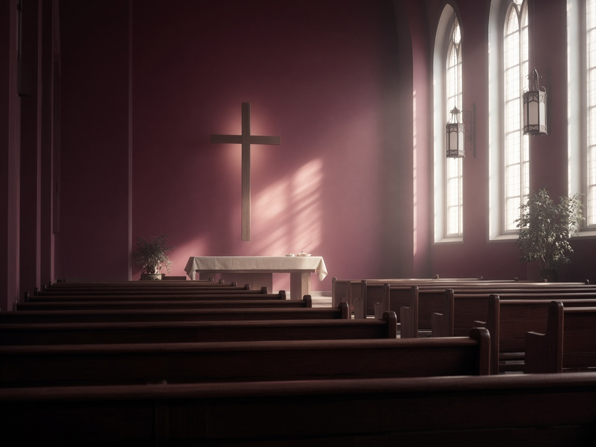

在基督裡相愛 在真理中成長
” 「祢的話是我腳前的燈，是我路上的光。」 詩篇 119:105 · 本月金句
Welcome
以聖經為信仰根基，持守浸信會信仰，活出基督的愛與真理。
在各樣聚會與小組中彼此相交、互相支持，一同成長，活出信仰群體的見證。
走進社區，關懷弱勢，實踐信仰價值，讓愛心在深水埗各處發光。
News
Worship
歡迎第一次到訪的朋友。請查閱聚會時間與惡劣天氣安排，我們在深水埗期待與你一起敬拜。
